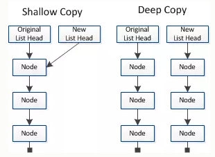

这个问题是我们经常碰到的一个问题，关于浅拷贝和深拷贝的区别，老听说，但就是不知道是什么回事。刚好今天写到相关的东西，就介绍一下。数据分为基本数据类型(String, Number, Boolean, Null, Undefined，Symbol)和对象数据类型。
基本数据类型的特点：直接存储在栈(stack)中的数据
引用数据类型的特点：存储的是该对象在栈中引用，真实的数据存放在堆内存里。
基本数据类型的拷贝没什么好讲，并不会涉及到指针和地址值的问题。现在假设有一个对象属性中有基本的数据类型和引用类型同时存在。浅拷贝只复制指向某个对象的指针，而不复制对象本身，新旧对象还是共享同一块内存。但深拷贝会另外创造一个一 模 一样的对象，新对象跟原对象不共享内存，修改新对象不会改到原对象。原理如下图所示：

那么如何去实现深拷贝与浅拷贝呢？下篇博客接着讲！！！